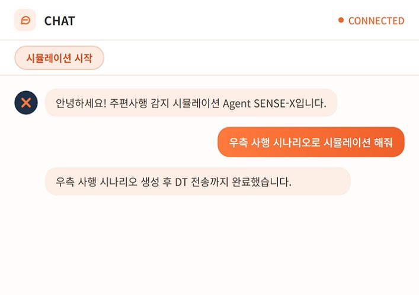
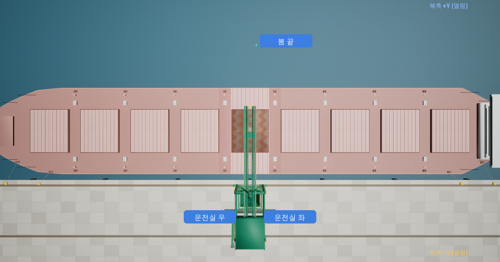
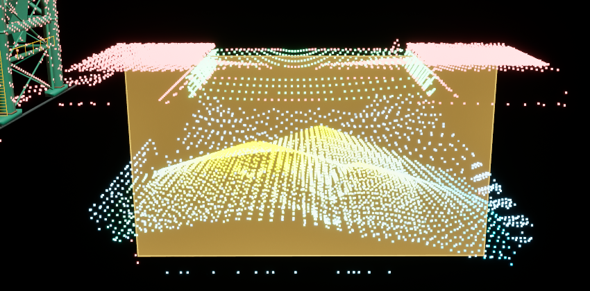
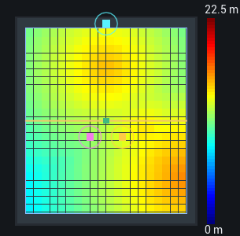
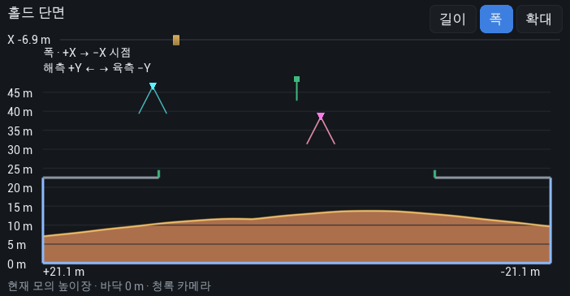
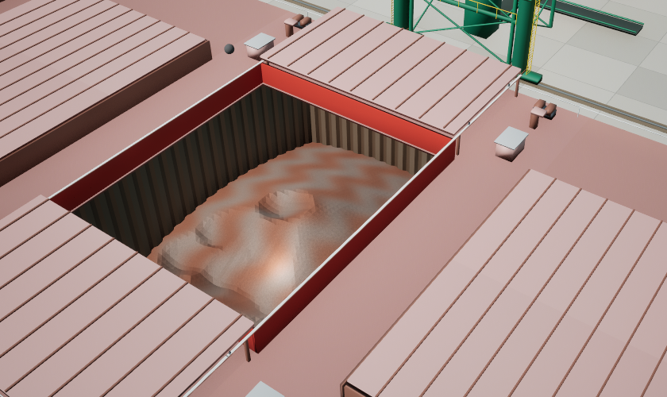

현장 확인과 협의를 거쳐오랜 기간 직접 검토
PoC 초기 시행착오와 현장 작업 부담
조업 조건 확보와 현장 협조 등사전 협의를 거친 후에야 가능
반복 시험과 동일 조건 재현이 어려움
실제 조업 속도로만 쌓이고이상 상황은 언제 생길지 모름
학습·검증용 이상 상황 데이터 부족

자연어 요청을 시나리오(JSON)로 변환
Slab 사행 재현, 가상 LiDAR PCD 생성
가상 데이터로 모델 학습·테스트
자연어 시험 요청
통합 화면 (React)
시나리오 생성
LLM · JSON
Slab 재현 · 가상센서 데이터 생성
Unreal Engine · PCD
모델 학습·테스트
Python · YOLO
인수·운영에 머물지 않고 기획부터 센서 배치 검토, 모델 검증까지 직접 진행
기존 Digital Twin(Unreal) 3D 에셋과 구축 경험을 참고해 시뮬레이션 전용 가상 현장을 재구성
수작업으로 생성하던 시험 조건을 자연어 요청으로 자동 생성하여 실행까지 수행
이동체 위치·이탈, 관측 범위 검토에시나리오·센서 기능 재사용
시나리오·데이터 인터페이스·모델 실행 방식 표준화
센서 과제 검토 시 먼저 거치는공통 단계


3대의 가상 LiDAR PCD로 홀드 내부 적재면 측정

상면 높이 분포를 색으로 표시

길이·폭 방향으로 적재 높이 단면 확인

그랩으로 퍼낸 만큼 적재면 변화 재현